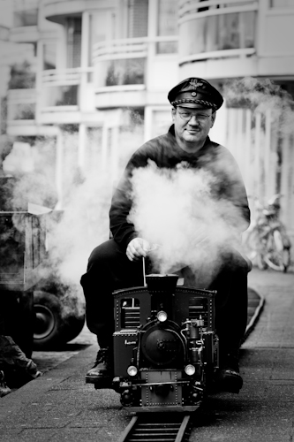
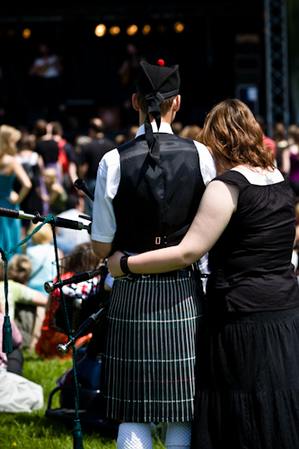

Evenement fotografie
Foto’s maken van landschappen of stilstaande objecten kan gaan vervelen. Veel fotografen gaan dan op zoek naar een onderwerp van vlees en bloed. Het makkelijkst is dit te doen in de stad, maar zomaar een cameralens op iemand richten is de eerste paar keren wel eng. Het vereist zelfvertrouwen en wat moed om hier overeen te stappen. Het bezoeken van publieke evenementen is een goede tussenstap om ervaring en zelfvertrouwen op te bouwen.
Tijdens publieke evenementen zoals festivals, presentaties, publieke optredens, culturele evenementen, etc. zijn er veel mensen met camera’s op stap. Het is meestal een activiteit die je niet elke dag ziet en dat trekt camera’s aan. Bewust of onbewust houd je er dus rekening mee dat je wel eens op een foto terecht zou kunnen komen. Veel mensen hebben zich er op ingesteld of negeren het volledig, omdat ze bezig zijn met andere zaken. Zien ze het toch niet zitten dan zul je dit snel merken, dan is het het beste om op zoek te gaan naar een ander onderwerp.
De kans is echter groter dat de deelnemers van het evenement worden gefotografeerd. Vooral zij zijn gewend dat er een camera op hen wordt gericht, je moet van de aandacht houden of trots zijn op je werk wil je meedoen aan een evenement en dat maakt dat ze makkelijker te fotograferen zijn. Ze laten je rustig je gang gaan of poseren soms uit zichzelf. Zo kun je zelfvertrouwen opbouwen in het fotograferen van mensen. Vaak zul je merken dat als je camera er een beetje professioneel uitziet (de meeste mensen vinden een grote lens professioneel) dat mensen graag voor je willen poseren.
Av
Bij evenementen is een snelle reactie geboden. Het is druk, dus je moet er voor zorgen dat de momenten die zich voordoen raak zijn. Daarom kies ik er vrijwel altijd voor om bij evenementen op mijn camera de stand diafragmaprioriteit in te stellen (de Av stand bij Canon, A bij Nikon). Dit betekent dat ik van tevoren een bepaald diafragma kan kiezen en dat de camera er de juiste sluitertijd bij zoekt. Diafragmavoorkeur combineer ik met de spotmeting stand, zodat de camera de juiste sluitertijd zoekt bij het deel van de foto waar de focus op valt. Hierdoor kan ik mij volledig richten op de compositie.
Afhankelijk van de brandpuntafstand van de lens kies ik vaak standaard voor f/4-f/5.6 als diafragma instelling. Deze instelling garandeert dat het grootste deel van het gezicht scherp is, maar is nog wel zo beperkt dat de achtergrond onscherp wordt zodat er een scheiding tussen voorgrond en achtergrond is. Hiermee haal je ook de aandacht weg van mensen in de achtergrond voor zover ze geen felle kleding aan hebben.
Verder stel ik de camera in dat hij meerdere foto’s snel achter elkaar neemt om zoveel mogelijk gebruik te maken van een moment dat er net even niet iemand in beeld staat of de persoon net naar mij kijkt. Het kan net het verschil betekenen tussen wel of niet die hand van de omstander in beeld hebben.
Focus
Het menselijk oog is getraind om als het een gezicht ziet meteen naar de ogen te kijken. Ogen vertellen veel over de gemoedstoestand van iemand en in de evolutie hebben wij ons aangeleerd om zo gevaar of emoties te onderscheiden om goed te kunnen reageren op iemand. Het is van absoluut kritiek belang dat de ogen scherp zijn.
Kies een focuspunt dat is gericht op de ogen. Aangezien we vaak composities maken met de regel van derden in het achterhoofd wordt de persoon vaak niet in het midden van de foto geplaatst, het middelste focuspunt helpt dan niet bij het zekerstellen dat de ogen scherp zijn. Kies daarom het focuspunt het dichtst bij de ogen. Soms duurt dit te lang, zeker op camera’s die niet een snelle selectiekeuze hebben, richt dan het middelste focuspunt op de ogen, houd de sluiterknop half ingedrukt en pas de compositie aan. Hierbij moet je opletten dat je niet een stand als AI Servo of AI Focus gebruikt, deze passen continu de focus aan.
Privacy
Als mensen geen redelijke verwachting hebben van privacy, als de foto’s smaakvol zijn en de persoon niet denigreren en als er vanuit de organisatie van het evenement geen beperkingen worden opgelegd aan fotografie, dan is het geen enkel probleem om een foto van iemand te nemen. Vragen hoeft niet, is soms wel netjes, maar kan er ook voor zorgen dat het er gemaakt uitziet. Dan is het vaak beter om net na het nemen van de foto even contact te zoeken. Ik heb verschillende keren gehad dat mensen naar aanleiding van een publicatie op mijn fotoblog contact met mij zochten en vroegen of ik nog meer foto’s had of grotere versies aan hen wilde doormailen.
Anders is het voor commerciële toepassingen, dan kan iemand zich beroepen op zijn portretrecht. Weet je van tevoren dat je een foto commercieel gaat gebruiken, vraag dan of dit akkoord is en laat ze een papiertje tekenen waarop ze toestemming geven.